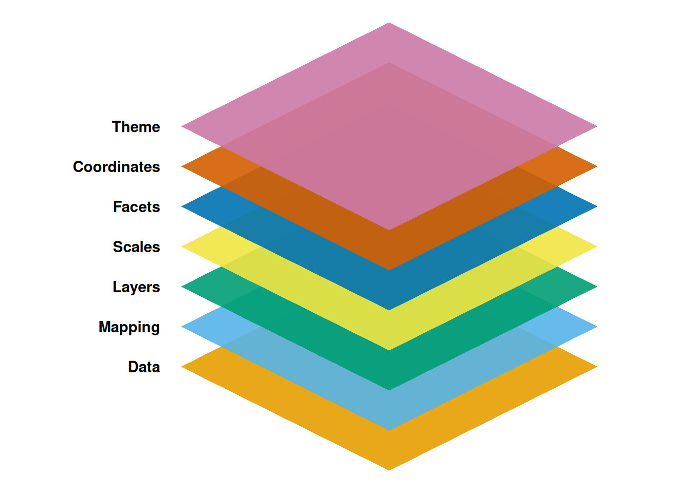
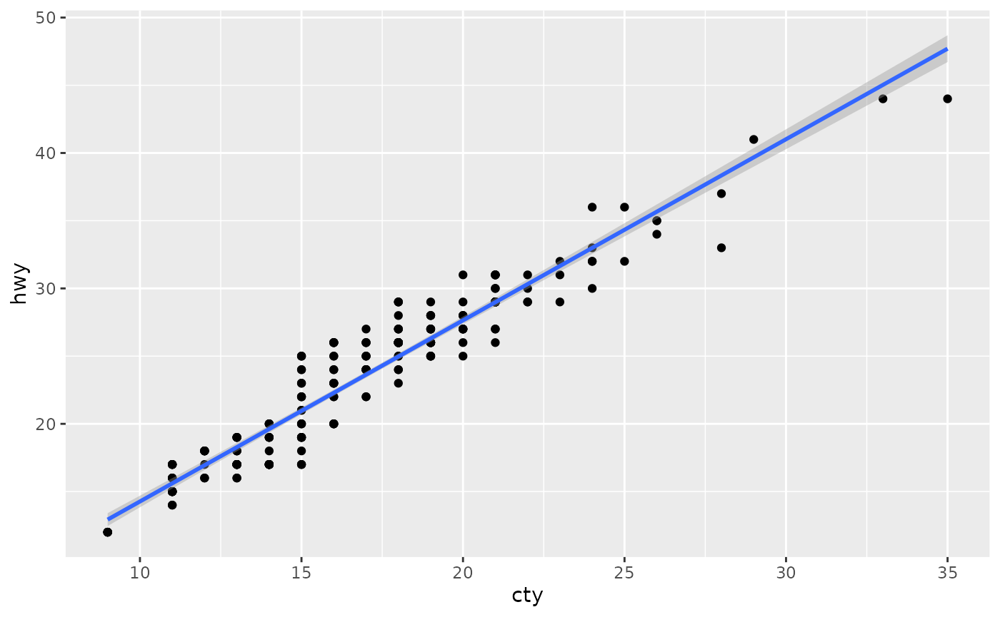
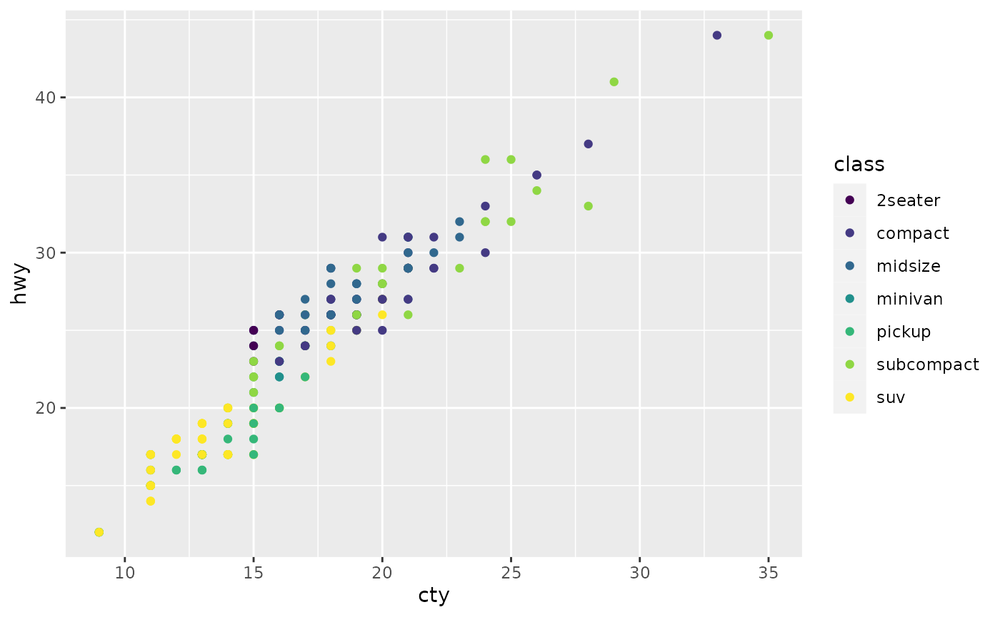
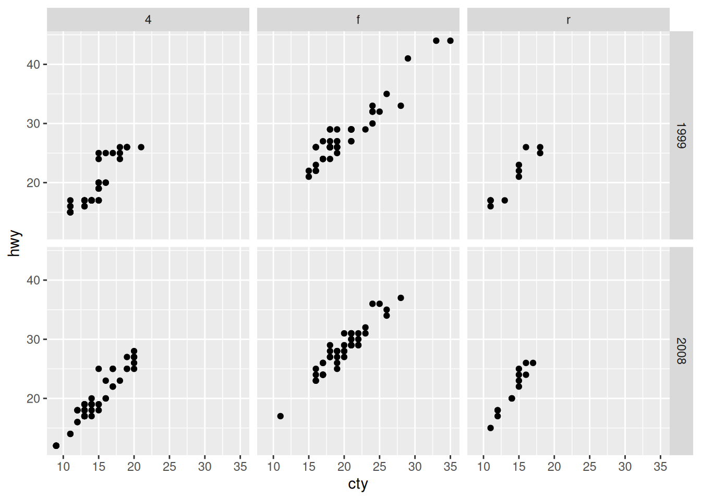

ggplot2 is an R package for producing visualizations of data. Unlike many graphics packages, ggplot2 uses a conceptual framework based on the grammar of graphics. This allows you to ‘speak’ a graph from composable elements, instead of being limited to a predefined set of charts.
More complete information about how to use ggplot2 can be found in the book, but here you’ll find a brief overview of the plot components and some terse examples to build a plot like this:

For structure, we go over the 7 composable parts that come together as a set of instructions on how to draw a chart.

Out of these components, ggplot2 needs at least the following three to produce a chart: data, a mapping, and a layer. The scales, facets, coordinates, and themes have sensible defaults that take away a lot of finicky work.
Data
As the foundation of every graphic, ggplot2 uses data to construct a plot. The system works best if the data is provided in a tidy format, which briefly means a rectangular data frame structure where rows are observations and columns are variables.
As the first step in many plots, you would pass the data to the
ggplot() function, which stores the data to be used later
by other parts of the plotting system. For example, if we intend to make
a graphic about the mpg dataset, we would start as
follows:
ggplot(data = mpg)Mapping
The mapping of a plot is a set of instructions on how parts of the data are mapped onto aesthetic attributes of geometric objects. It is the ‘dictionary’ to translate tidy data to the graphics system.
A mapping can be made by using the aes() function to
make pairs of graphical attributes and parts of the data. If we want the
cty and hwy columns to map to the x- and
y-coordinates in the plot, we can do that as follows:
Layers
The heart of any graphic is the layers. They take the mapped data and display it in something humans can understand as a representation of the data. Every layer consists of three important parts:
- The geometry that determines how data are displayed, such as points, lines, or rectangles.
- The statistical transformation that may compute new variables from the data and affect what of the data is displayed.
- The position adjustment that primarily determines where a piece of data is being displayed.
A layer can be constructed using the geom_*() and
stat_*() functions. These functions often determine one of
the three parts of a layer, while the other two can still be specified.
Here is how we can use two layers to display the cty and
hwy columns of the mpg dataset as points and
stack a trend line on top.
ggplot(mpg, aes(cty, hwy)) +
# to create a scatterplot
geom_point() +
# to fit and overlay a loess trendline
geom_smooth(formula = y ~ x, method = "lm")
Scales
Scales are important for translating what is shown on the graph back to an understanding of the data. The scales typically form pairs with aesthetic attributes of the plots, and are represented in plots by guides, like axes or legends. Scales are responsible for updating the limits of a plot, setting the breaks, formatting the labels, and possibly applying a transformation.
To use scales, one can use one of the scale functions that are
patterned as scale_{aesthetic}_{type}() functions, where
{aesthetic} is one of the pairings made in the mapping part
of a plot. To map the class column in the mpg
dataset to the viridis colour palette, we can write the following:
ggplot(mpg, aes(cty, hwy, colour = class)) +
geom_point() +
scale_colour_viridis_d()
Facets
Facets can be used to separate small multiples, or different subsets of the data. It is a powerful tool to quickly split up the data into smaller panels, based on one or more variables, to display patterns or trends (or the lack thereof) within the subsets.
The facets have their own mapping that can be given as a formula. To
plot subsets of the mpg dataset based on levels of the
drv and year variables, we can use
facet_grid() as follows:
ggplot(mpg, aes(cty, hwy)) +
geom_point() +
facet_grid(year ~ drv)
Coordinates
You can view the coordinates part of the plot as an interpreter of position aesthetics. While typically Cartesian coordinates are used, the coordinate system powers the display of map projections and polar plots.
We can also use coordinates to display a plot with a fixed aspect
ratio so that one unit has the same length in both the x and y
directions. The coord_fixed() function sets this ratio
automatically.
ggplot(mpg, aes(cty, hwy)) +
geom_point() +
coord_fixed()
Theme
The theme system controls almost any visuals of the plot that are not controlled by the data and is therefore important for the look and feel of the plot. You can use the theme for customizations ranging from changing the location of the legends to setting the background color of the plot. Many elements in the theme are hierarchical in that setting the look of the general axis line affects those of the x and y axes simultaneously.
To tweak the look of the plot, one can use many of the built-in
theme_*() functions and/or detail specific aspects with the
theme() function. The element_*() functions
control the graphical attributes of theme components.
ggplot(mpg, aes(cty, hwy, colour = class)) +
geom_point() +
theme_minimal() +
theme(
legend.position = "top",
axis.line = element_line(linewidth = 0.75),
axis.line.x.bottom = element_line(colour = "blue")
)
Combining
As mentioned at the start, you can layer all of the pieces to build a customized plot of your data, like the one shown at the beginning of this vignette:
ggplot(mpg, aes(cty, hwy)) +
geom_point(mapping = aes(colour = displ)) +
geom_smooth(formula = y ~ x, method = "lm") +
scale_colour_viridis_c() +
facet_grid(year ~ drv) +
coord_fixed() +
theme_minimal() +
theme(panel.grid.minor = element_blank())
If you want to learn more, be sure to take a look at the ggplot2 book.